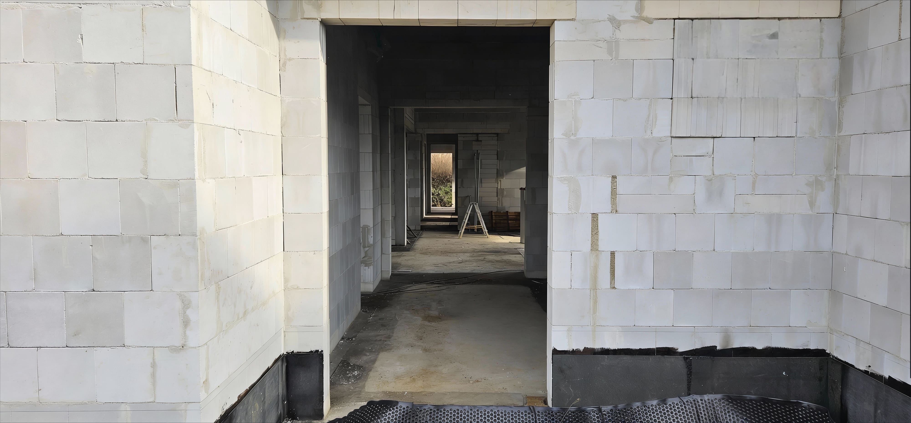
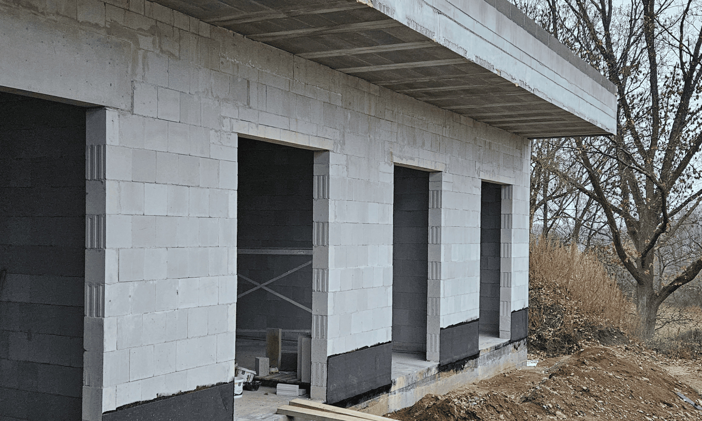

Vápenopískové zdivo
Materiál, který rozhoduje o kvalitě domu. Unikátní kombinace pevnosti, akustického komfortu a ekologických výhod pro moderní i pasivní domy.
Zjistit víceVýhody vápenopískových staveb
Vápenopískové zdivo nabízí unikátní kombinaci vlastností, které z něj dělají ideální volbu pro moderní výstavbu.
Výborná tepelná akumulace
Vápenopískové bloky vynikají schopností akumulovat teplo. V létě dům brání před přehříváním, v zimě naopak snižují náklady na vytápění.
Vysoká zvuková izolace
Díky hustotě a pevnosti materiálu poskytují vápenopískové bloky vynikající zvukovou izolaci, což zajišťuje klidné a tiché bydlení.
Ekologická udržitelnost
Vápenopískové zdivo je vyrobeno z přírodních materiálů, které jsou šetrné k životnímu prostředí a přispívají k udržitelné výstavbě.
Rychlá a efektivní výstavba
Stavební systémy z vápenopísku umožňují rychlou a efektivní výstavbu, což šetří čas i náklady na stavbě.
Vysoká nosnost a stabilita
Vápenopískové bloky poskytují vynikající nosnost a stabilitu, což je ideální pro stavbu vícepatrových budov.
Odolnost proti požáru
Vápenopískové materiály jsou nehořlavé a poskytují vysokou úroveň požární ochrany, což zvyšuje bezpečnost vašeho domova.
Materiál, který rozhoduje o kvalitě domu
Vápenopískové zdivo nabízí unikátní kombinaci pevnosti, akustického komfortu a ekologických výhod. Díky své schopnosti akumulace tepla a vysoké objemové hmotnosti je ideální volbou pro moderní i pasivní domy, kde přispívá ke stabilnímu vnitřnímu klimatu a energetické úspornosti.
.jpg)
Nosné zdivo s vysokou únosností
Nosné zdivo z vápenopísku dosahuje vysoké únosnosti i při menší tloušťce stěn, což umožňuje štíhlejší konstrukce a více využitelného prostoru.
- Vysoká pevnost v tlaku
- Tenčí nosné stěny
- Víc využitelného vnitřního prostoru

Stabilní teplota po celý rok
Díky vysoké měrné tepelné kapacitě dokáže vápenopískové zdivo teplo akumulovat a postupně uvolňovat, což stabilizuje teplotu v interiéru.
- Omezení přehřívání v létě
- Stabilní teplota v zimě
- Podpora energeticky úsporného provozu

Tiché a klidné prostředí
Vápenopískové zdivo má vysokou objemovou hmotnost, díky které výrazně omezuje přenos hluku mezi místnostmi i zvenčí.
- Vysoká vzduchová neprůzvučnost
- Tiché a klidné vnitřní prostředí
- Ideální pro ložnice a obytné prostory
7 důvodů proč zvolit vápenopískové cihly
Na základě odborného článku od výrobce VPC sumarizujeme klíčové výhody vápenopískových cihel – od úspory plochy až po ekologii a přímý nákup od výrobce.
Vysoká pevnost + nízká tloušťka VPC
Až o 7 % více podlahové plochy
Vápenopískové cihly mají vysokou únosnost v kombinaci s nízkou tloušťkou zdiva. Rodinný dům lze navrhnout s tloušťkou obvodové stěny 175 mm a příčkami 115 mm. Tím lze získat více užitné plochy na stejnou obestavěnou plochu domu.
| Konstrukce (mm) | Plochy (m²) | ||||
|---|---|---|---|---|---|
| Obvodové zdivo | Tepelná izolace | Příčky | Obvodové stěny | Příčky | Užitná plocha |
| 450 | 150 | 150 | 43,2 | 12 | 112,8 |
| 500 | 0 | 150 | 36 | 12 | 120,0 |
| 450 | 0 | 125 | 32,58 | 10 | 125,4 |
| 175 (VPC) | 200 | 115 | 27,38 | 9,2 | 131,4 |
Optimalizací tlouštěk zdiva lze na rodinném domě s rozměry 7 × 12 m získat oproti jiným zdicím systémům 6–18,6 m² užitné plochy navíc — v zásadě jednu místnost navíc.
Při ceně 6 500 Kč/m³ obestavěného prostoru to představuje úsporu až 392 925 Kč.
Homogenní a přesný povrch
Úspora na omítkách
Vápenopískové zdivo zděné na tenkovrstvou maltu je vysoce homogenní a přesné. Výsledné zdivo má vysokou přesnost a lze tak aplikovat jen tenkovrstvou omítku bez síťoviny o tl. 5–10 mm namísto omítek jádrových o tl. 15–25 mm.
3× více materiálu = 3× vyšší cena omítky + vyšší pracnost (2 vrstvy). Cena omítek může tvořit i 2–3 % z ceny stavby.
Tepelnou izolaci není třeba kotvit mechanicky
Úspora za kotvy
Díky přesnosti a vysoké pevnosti VPC podkladu lze tepelnou izolaci na obvodové zdivo RD celoplošně lepit bez dalšího kotvení.
S rostoucí tloušťkou zateplovacích systémů začínají být kotvy výraznějším finančním nákladem. V průběhu životnosti stavby se navíc jedná o bodové tepelné mosty, které funkčně oslabují izolaci až o několik centimetrů.
Toto je jeden z důvodů, proč je VPC masivně využíván pro pasivní domy.
Rychlost výstavby a strojní zdění
Úspora času
Z vápenopískových cihel lze zdít ručně i strojně. Strojní zdění probíhá pomocí minijeřábu a hydraulických kleští.
KS-QUADRO bloky pro strojní zdění jsou vhodné zejména pro větší projekty – bytové domy a developerské stavby. Pro úspěch je klíčová příprava projektu v oktametrickém rastru (po 125 mm).
Masivní stavba – akustika, akumulace, mikroklima
Komfort na celý život
Akustická pohoda je z pohledu bydlení velmi důležitá. Čím vyšší je tloušťka a objemová hmotnost dělícího materiálu, tím lepší má stěna akustické vlastnosti.
Objemová hmotnost má rovněž zásadní podíl na vysoké tepelné setrvačnosti. V létě si dům lépe uchová chlad, zatímco v zimě teplo. Systém otevřených a propojených pórů umožňuje vlhkosti volně pronikat do zdiva a zpět – klíč k dobrému vnitřnímu mikroklimatu.
Vápenopískové cihly jsou ekologickou volbou
Přírodní materiály, nízká energetická náročnost
Přírodní materiály
Vyrobeno z vápna, písku a vody.
Nízká spotřeba energie
Méně energie při výrobě oproti jiným materiálům.
Recyklovatelný
Materiál nezatěžuje životní prostředí.
Karbonatace CO₂
V průběhu životnosti naváže 40 % CO₂ vzniklé při výrobě.
VPC cihly přímo od výrobce
Bez prostředníků, rychlé dodání
Smluvní vztah každého zákazníka je navázán přímo s výrobcem Zapf Daigfuss, který vyrábí materiál nepřetržitě od roku 1899. Materiál je dopravován rovnou na místo stavby bez dalších prostředníků.
První návozy probíhají do 14 dní od přijetí platby, ve většině případů je však materiál na stavbě rychleji.
Vápenopískové cihly jako investice
Pokud budeme uvažovat zisk na podlahové ploše oproti jiným zdicím systémům a cenu zdiva, která je přibližně 4 % z ceny domu, tak jsou vápenopískové cihly produktem, který se v mnoha případech sám zaplatí.
V kombinaci s přijatelnými rozpony, štíhlými stropy a dalšími konstrukčními volbami, které snižují obestavěný prostor, je investor na dobré cestě jak postavit levný a přitom prostorný, efektivně využitý dům.
Odborný článek
VPC – 7 důvodů proč zvolit vápenopískové cihly
Kompletní článek na webu výrobce kalksandstein.cz
Přečíst celý článekZaujal vás vápenopísek?
Rádi vám poradíme s výběrem materiálu a technickým řešením vaší stavby. Konzultace je nezávazná a zdarma.